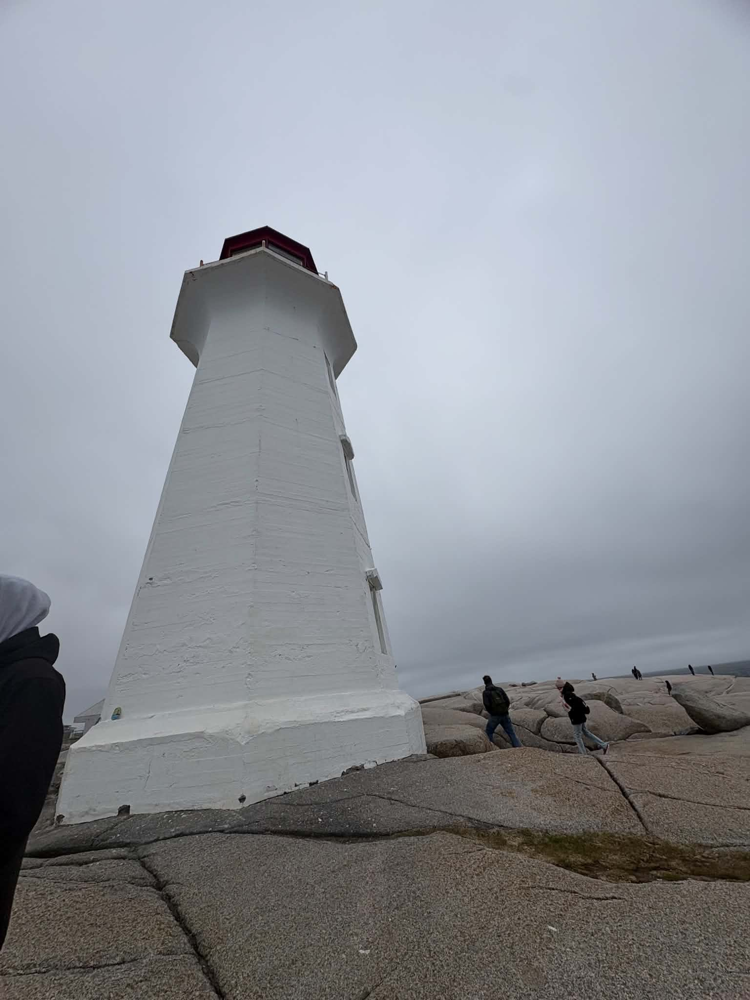
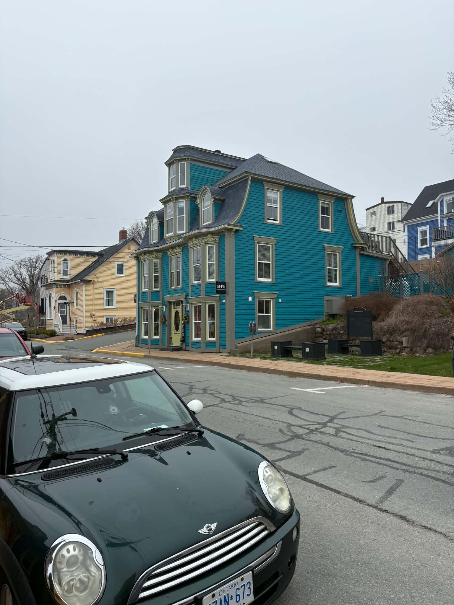
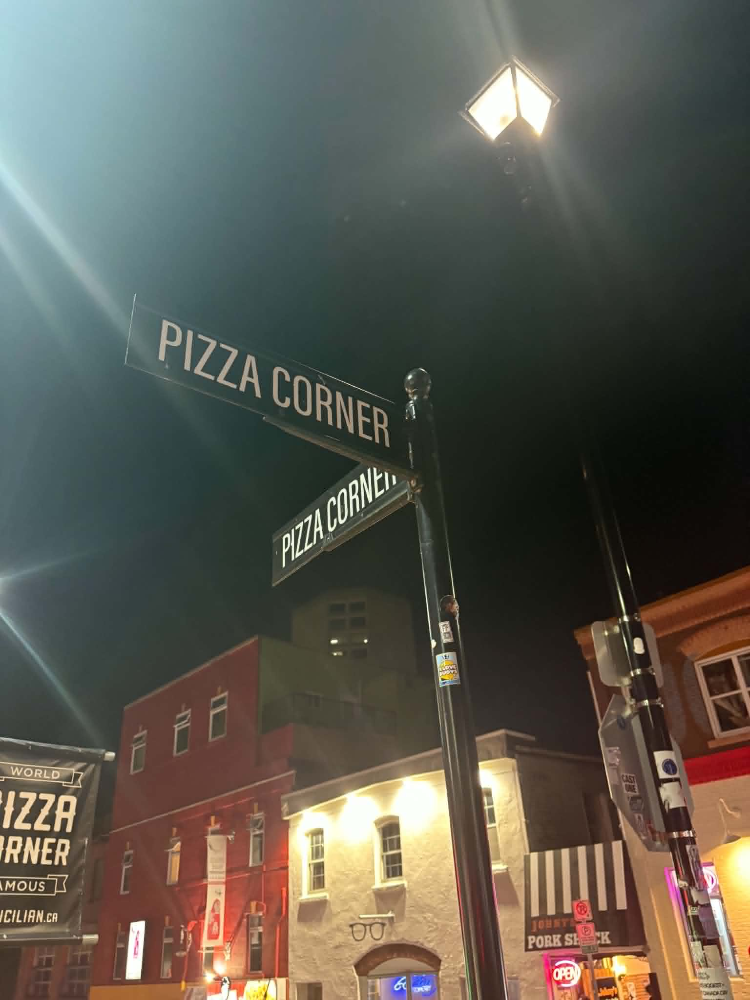
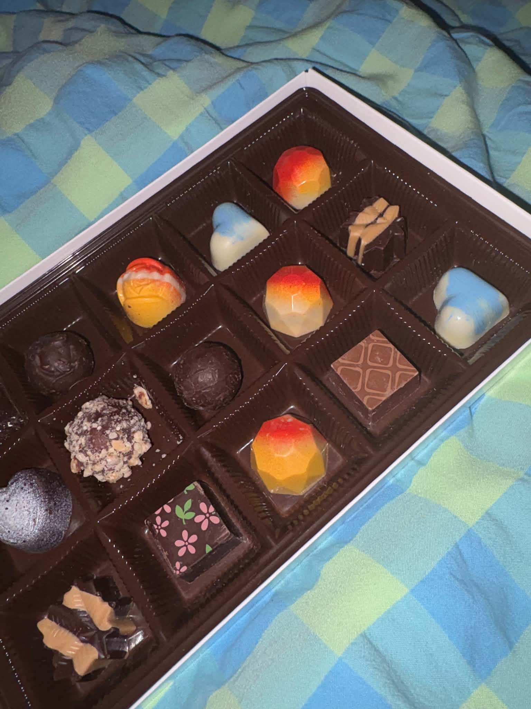
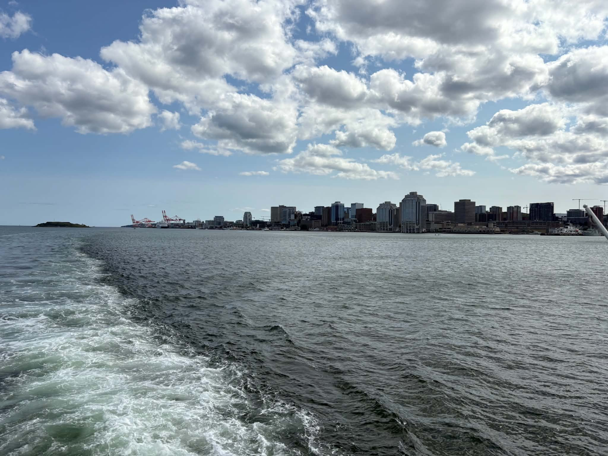
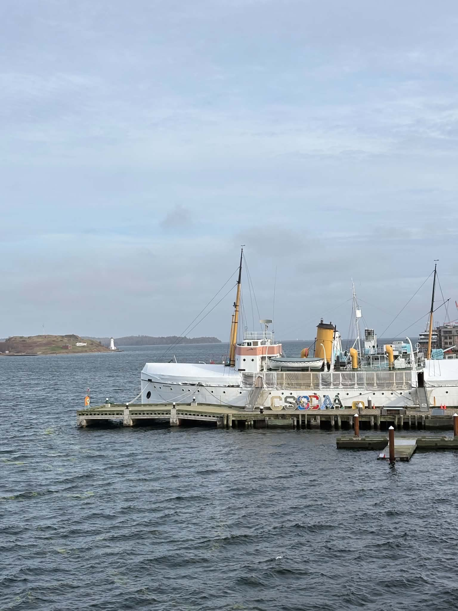

I am so glad we met. Before we were introduced, I don't know that I would've gone out of my way to meet you, and although that seems like a terrible thing to say, I can also say with confidence how terribly mistaken I was to not even have you on my radar.
Something about you made me feel nostalgic, and I am not sure exactly for what. You gave me feelings of comfort and warmth, and a longing for a time that has passed. I am not quite sure how to describe this feeling other than reminiscent, nostalgic, yearning. It is a profound feeling and definitely intriguing, seeing that I haven't met you before this.
Despite that, I felt like I really knew you and you really knew me. With you I was reminded of both pieces of my past, as well as where I am headed in the future. Thank you for reminding me about the things that make up who I am.

The Charming Lunenburg
Pizza Corner!
Peace by Chocolate, a Nova Scotia staple
Gorgeous Views
The Grand Old Lady, since 1913